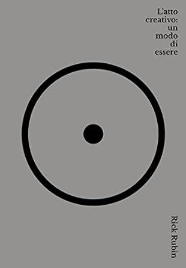

3.3.4 — Arte, previsioni e futuro
La creatività, in questo contesto, diventa una competenza di sopravvivenza. Henri Poincaré e Graham Wallas hanno descritto il processo creativo in quattro fasi: preparazione, incubazione, illuminazione, verifica. L'AI può accelerare la preparazione e automatizzare la verifica, ma l'incubazione — quel momento in cui la mente vaga senza scopo e le connessioni emergono — resta irriducibilmente umana (🎨 ff.18.3 L'arte tra intelligenza artificiale e l'uomo). DALL-E ha generato il volto di Shakespeare. Un algoritmo ha ricostruito il busto di Nefertiti in 3D. Ma l'atto creativo non è la produzione dell'oggetto: è la domanda che lo precede (🖼️ ff.18.5 Dipinti ricreati dall'AI). Rick Rubin, in The Creative Act, definisce la creatività come “un modo di essere nel mondo”, non una competenza tecnica. Il “vibe coding” — programmare guidati dall'intuizione piuttosto che dalla logica — è la traduzione tecnologica di questo principio (🎸 ff.127.2 Rock 'n' roll e vibe coding).

Riprendendo ff.127.2, quando parlavamo del vibe coding come rock ’n’ roll della programmazione, lo stesso autore di questa newsletter confessa apertamente la propria ossessione. In ff.147, un’uscita dal titolo programmatico — Grazie per tutto il pesce, la citazione di Douglas Adams che chiude Guida galattica per gli autostoppisti — Michele ammette di essere letteralmente risucchiato dalle potenzialità di Claude Code, l’ambiente agentico di Anthropic. La cornice biografica è densa e conta: una maratona a Roma, un Ironman a Francoforte a tre mesi di distanza, il lavoro, le relazioni. In mezzo, una domanda editoriale onesta: ha ancora senso, questa newsletter? La domanda è la stessa che, tre anni prima, Ivan Mistrik si era posto studiando venticinque anni di consumi di uova[40]: dati, grafici, micro-serie storiche raccolte dal dopoguerra. Di quella disciplina Michele intuisce l’obsolescenza: se Claude Code prende un podcast e lo trasforma in un ff.x.y in pochi minuti, il collo di bottiglia non è più la scrittura, ma il gusto. La newsletter non muore: cambia di ruolo. Da registro di spunti diventa registro di giudizi — e questo paragrafo che state leggendo è un’autoconferma recursiva. Come argomentato in ff.127.4 (Palantir, umanesimo e Silicon Valley), la terza via non è rifiutare la macchina, ma restituirle una direzione. Grazie per il pesce, appunto (🏺 ff.147.1 Passato fortissimo).
A volte l’incubazione creativa di cui parlano Poincaré e Wallas nasce dal lutto. Il New York Times ha provato a visualizzare il milione di morti per COVID negli Stati Uniti usando pixel: ogni puntino, una vita umana. Abituati a essere investiti da miliardi di miliardi di pixel ogni giorno — banner, notifiche, feed — fermarsi su ogni puntino nero e dedicargli il tempo necessario è difficilissimo. Ma il giornale ce lo chiede. Una pagina interattiva distribuisce i pixel verticalmente per giorni mostrando la progressione della pandemia; un’altra divide per età: 650.000 sopra i 65 anni. Il dato è già passato per le statistiche; il NYT lo rimette nel registro dell’esperienza. Come Duchamp con l’orinatoio, il giornale con i pixel: il gesto artistico non aggiunge informazioni, modifica l’attenzione. E dopo ogni pandemia, l’attenzione è la risorsa più scarsa (⚈ ff.27.1 I pixel del New York Times).
E Axios ha scelto un’altra strada: lo scroll. Una pagina in cui, scrollando, si accumulano i morti, con un grafico che cresce nell’angolo mano a mano che il dito si muove sullo schermo. A gennaio 2021, gli Stati Uniti hanno raggiunto il numero di morti della Seconda guerra mondiale; a settembre 2021, il milione della pandemia del 1918. Normalizzando per popolazione — triplicata dal 1918 — un milione e mezzo di morti COVID produrrebbe una mortalità percentuale pari a quella spagnola. Axios ha trasformato il gesto del doomscrolling — l’atto emblematico dell’ansia digitale — nel suo opposto: uno scroll intenzionale, dove ogni centimetro è un tributo. La differenza non è grafica, è cognitiva: il pixel del NYT chiede lentezza, lo scroll di Axios chiede consapevolezza del proprio gesto. Entrambi rovesciano la logica del feed: non più consumo passivo ma atto memoriale (🖱 ff.27.2 Scroll e morti).
Da Bergamo un’altra risposta artistica al presente digitale. Salto nel vuoto è stata la mostra della GAMeC nell’anno in cui Bergamo e Brescia erano Capitali italiane della cultura. Il filo conduttore: la smaterializzazione/digitalizzazione dell’arte, dell’essere, della vita. Metaverso, NFT, arte generativa: la retrospettiva non li ha trattati come novità tecniche ma come capitoli di una lunga interrogazione filosofica sull’essere e il non-essere, sul pieno e sul vuoto. Millenni di riflessioni su materia e antimateria approdano, nella mostra, al pixel e al token. Il vuoto digitale non è assenza ma potenzialità programmabile: una tela bianca dove la fisica quantistica incontra il linguaggio del codice. Come per i pixel del NYT, non si aggiunge contenuto: si sposta l’attenzione su ciò che il contenuto presuppone. La riflessione sul vuoto è una pratica anti-overload perfetta per il 2026 (🔨 ff.64.1 La mostra sul vuoto).
E se Duchamp presentava l’orinatoio come scultura, il collettivo inglese Rankin ha ribaltato il gioco un secolo dopo. L’esposizione Best Seat in the House trasforma tavolette del WC in tele artistiche. Il motivo è sorprendentemente serio: una persona su cinque al mondo non ha un cesso. La campagna promuove WaterAid per l’igiene globale. “Toilets can make us feel a little uncomfortable. Using the toilet seat as a canvas is an accessible and engaging way to put the spotlight on toilets and get people talking about them”, dice Rankin. Duchamp provocava rimuovendo l’oggetto dal suo contesto d’uso; Rankin provoca facendolo tornare al suo contesto con una missione umanitaria. Il gesto è in continuità con Perfect Days di Wenders (🎨 ff.108.4 L’arte nei cessi): la sacralità si annida dove meno te l’aspetti, purché qualcuno si fermi a guardare davvero (🚽 ff.18.2 Cessi artistici).
La pubblicità, del resto, è diventata essa stessa un formato artistico riconosciuto. VanMoof — l’azienda olandese di bici elettriche che ha raggiunto lo status di “Tesla della bicicletta” — ha commissionato all’animatore di Isle of Dogs, film di Wes Anderson, il suo spot sulla sicurezza anti-furto. Il risultato è un corto di stop-motion con la simmetria maniacale e i pastelli sbiaditi della cinematografia di Anderson. Per una bici elettrica. La pubblicità come commissione autoriale non è nuova, ma segnala una convergenza: i brand acquistano registi come gli editori acquistano scrittori, e gli spot diventano cortometraggi con un product placement. Se il rapporto tra arte e pubblicità un tempo era di tensione, oggi è di alleanza — e non è chiaro chi stia usando chi. Il paradosso: il miglior cinema d’autore contemporaneo si trova nei 60 secondi sponsorizzati prima di YouTube (🚨 ff.20.4 Simmetrie di Wes Anderson contro i furti).
E chi ha dominato un secolo di marketing visivo cinematografico? L’arancione. [37] ha rivelato che l’arancione domina perché cattura l’attenzione senza allarmare e amplifica la presenza umana, complementare al blu del cielo e degli sfondi. Quando un singolo colore si impone su centomila decisioni editoriali indipendenti nell’arco di un secolo, la scelta non è più estetica: è neuro-engineering collettivo. Come il pixel del NYT spinge alla lentezza e lo scroll di Axios alla consapevolezza, il poster arancione spinge all’acquisto del biglietto. Ogni scelta visiva è un’ipotesi testata miliardi di volte sul pubblico: il design dei poster è la metrica più onesta del nostro gusto — e il nostro gusto, a quanto pare, è caldo, urgente ma non aggressivo. Esattamente il contrario del rosso delle notifiche.
E se la scienza sa fare un poster, sa fare anche una cacio e pepe. [38]: la termodinamica spiega come l’amido di mais eviti i grumi. I ricercatori hanno mostrato che la viscosità del sugo dipende dal gradiente termico tra acqua di cottura e cacio, e che una piccola quantità di amido stabilizza la fase oleosa impedendo alle proteine del pecorino di aggregarsi in grumi visibili. Non è uno scherzo: è un’applicazione pulita dei modelli colloidali. Il paradosso italiano, registrato con affetto dalla giuria IgNobel: servono equazioni per evitare i grumi. O, detta nell’altro verso, la cucina è ingegneria che si rifiuta di chiamarsi tale. Dal poster arancione alla cacio e pepe, la scienza si permette il lusso di dimostrare l’ovvio — e facendolo, rende visibile ciò che la tradizione dava per scontato.
E la politica sperimenta con lo stesso spirito. [39]: non un ministro per l’AI, ma un ministro virtuale fatto di pixel e codice, chiamato Diella (“sole” in albanese). La delega non è solo simbolica: Diella è responsabile degli appalti pubblici, un’area tradizionalmente esposta alla corruzione. Il ragionamento dichiarato: un ministro che non dorme, non ha conflitti d’interesse, non fa pause pranzo, può applicare le regole di gara con freddezza algoritmica e audit trail completo. Gli scettici osservano che il codice eredita i bias dei suoi autori; gli ottimisti ribattono che lo stesso vale per i ministri umani, con meno tracciabilità. Il Nepal aveva eletto un ministro via Discord (🏛️ ff.135.5 Politica tecnologica), l’Albania ha fatto un passo ulteriore: non più un ministro scelto via AI, ma un ministro che è un’AI. Il test di Turing politico è appena iniziato.
L’intelligenza artificiale, d’altronde, non è solo minaccia per l’arte: a volte ne diventa complice involontaria. Google Art and Culture, dopo aver offerto la possibilità di ritrovare se stessi in un’opera d’arte attraverso il riconoscimento facciale, ha esteso la funzione anche agli animali domestici. Fotografa il tuo cane o il tuo gatto, e l’algoritmo trova il dipinto che gli somiglia di più. I costi energetici del training dell’IA sono enormi, ma certe applicazioni restano fenomenali nella loro leggerezza (🎨 ff.2.3 Avete trovato l’opera d’arte col vostro cane/gatto?).
Rubin, in fondo, non fa che riformulare un principio antichissimo: il Tao della creatività è l'attenzione, non la tecnica. Nel 1917 Marcel Duchamp prese un orinatoio Bedfordshire prodotto in serie, lo firmò “R. Mutt” e lo presentò come scultura alla Society of Independent Artists di New York. Fountain fu rifiutato, poi divenne l'opera più influente del Novecento secondo un sondaggio tra 500 esperti d'arte nel 2004. Il gesto era radicale: l'arte non risiede nell'oggetto ma nello sguardo che lo elegge. Wim Wenders arriva alla stessa conclusione un secolo dopo con Perfect Days: il protagonista Hirayama, addetto alla pulizia dei bagni pubblici di Tokyo, trova la bellezza nel riflesso della luce tra le foglie, nella routine del mattino, nel silenzio tra due canzoni nel furgone. Il “creative act” di Rubin è esattamente questo: non produrre, ma notare. Giovanni Pascoli lo aveva intuito nel 1897 con Il Fanciullino — il poeta è il bambino interiore che si stupisce di ciò che l'adulto ha smesso di vedere: “è dentro noi un fanciullino che non solo ha brividi, ma lagrime e tripudi suoi.” Dall'orinatoio di Duchamp ai bagni pubblici di Wenders, dal Tao al fanciullino, il filo è lo stesso: l'arte si trova dove meno te l'aspetti, purché qualcuno si fermi a guardare (🎨 ff.108.4 L'arte nei cessi).
Se il “vibe coding” democratizza la programmazione, resta una domanda più profonda: chi programma i programmatori? Alex Karp, co-fondatore di Palantir, nel suo recente libro The Technological Republic denuncia una Silicon Valley che ha smarrito il senso della storia. Gli ingegneri rifiutano di collaborare con l’esercito americano, ma non esitano a raccogliere fondi per il prossimo social network alienante. I numeri parlano chiaro: i laureati in discipline umanistiche sono scesi dal 14% al 7% dal 1966 a oggi, mentre le iscrizioni a ingegneria informatica hanno raggiunto le 90.000 unità nel 2020. Abbiamo bisogno — sostiene Karp — di ingegneri curiosi del mondo, della sua storia e delle sue contraddizioni; non solo capaci di scrivere codice. Mariana Mazzucato ci ricorda che internet e GPS nacquero dal Dipartimento della Difesa americano — poi arrivarono Instagram e Uber. Se l’AI permette a Rick Rubin di diventare un programmatore, allora la Silicon Valley deve riscoprire arte, filosofia e storia: una terza via pacifista ma consapevole dei rischi che il software, nuovo “nucleare”, pone al futuro dell’umanità (🚁 ff.127.4 E Palantir che c'entra?).
Eppure il futuro stesso sembra aver perso il proprio nome. Matt Clancy, ricercatore di innovazione alla Iowa University, pubblica una newsletter dal titolo perfetto: What’s New Under the Sun. Nell’ultimo numero estivo, mostra come dagli anni Ottanta le parole “progresso” e “futuro” compaiano con frequenza decrescente nei testi pubblici, sostituite da “rischio” e “cautela”. Se si rimuove “futuro” dai sinonimi di progresso, il trend è ancora più evidente: la cultura contemporanea ha smesso di parlare di ciò che verrà e ha iniziato a parlare di ciò che potrebbe andare storto. Ma il progresso non va in vacanza, nemmeno quando le parole che lo descrivono lo fanno. Due interviste illuminanti di quell’estate 2024 lo dimostrano: Raoul Pal, ex Goldman Sachs, che annuncia la fine del modello economico attuale entro sei anni, ed Eric Schmidt, ex CEO di Google, che offre una visione talmente esplicita sulla rivoluzione AI da far rimuovere il video dall’archivio di Stanford. Quando le istituzioni censurano le previsioni troppo oneste, il segnale è più potente della previsione stessa. Battezzando questo spazio “futuro fortissimo” si rischia di scombussolare l’analisi di Clancy, ma il punto resta: chi smette di nominare il futuro, smette di immaginarlo. E chi smette di immaginarlo, non lo costruisce (⛱ ff.102.1 Il futuro non va in vacanza).
Dagli anni Ottanta le parole “progresso” e “futuro” compaiono con frequenza decrescente nei testi pubblici, sostituite da “rischio” e “cautela”. Eric Schmidt, ex CEO di Google, ha offerto una visione talmente esplicita sulla rivoluzione AI da far rimuovere il video dall’archivio di Stanford. Chi smette di nominare il futuro, smette di immaginarlo.
Ma c’è chi il futuro non ha mai smesso di nominarlo. Ray Kurzweil, futurista con 21 dottorati ad honorem, sin da La singolarità è vicina (2005) usa la legge di Moore per stimare l’avvento dell’AGI. Sin dal 2005 la stimava per il 2029 — e ha confermato la previsione anche recentemente. La differenza con la bolla dot-com sta nel riversarsi in tecnologie fisiche della potenza di calcolo: i pannelli solari estraggono 1.000 volte l’energia rispetto a vent’anni fa. Robot umanoidi offrono maggiore flessibilità applicativa — miniere, agricoltura, costruzione di infrastrutture. L’aumento di PIL sarà vertiginoso, e tutto sarà in continua accelerazione. Appuntamento con La singolarità è più vicina (🔮 ff.88.4 La profezia Maya (o meglio, di Kurzweil)).
Le rivoluzioni tecnologiche, in fondo, non sono mai solo tecnologiche. Sopravvivere alla rivoluzione AI richiede le stesse competenze che hanno permesso all'umanità di sopravvivere alla rivoluzione industriale: adattabilità, apprendimento continuo, solidarietà comunitaria. Chi ha attraversato la prima rivoluzione non sono stati i più forti o i più intelligenti, ma i più connessi (⚽ ff.55 Sopravvivere alla rivoluzione). Greg McKeown, autore di Essentialism, ha rivoluzionato il concetto di obiettivi concentrandosi sulle persone: il successo non si misura in risultati ma in relazioni. Maslow stesso ha rivisitato la sua piramide aggiungendo la self-transcendence — il bisogno di superare sé stessi al servizio degli altri. L'essenziale, come insegna il Piccolo Principe, è invisibile agli occhi: l'essenzialismo può favorire relazioni più profonde e significative (💌 ff.89 Meno Tinder, più relazioni).
La connessione, d'altronde, non è un'invenzione moderna: è la ragione per cui siamo ancora qui. Per circa ottomila anni, Homo sapiens e Neanderthal hanno coabitato l'Europa — due specie intelligenti, entrambe capaci di fabbricare utensili e seppellire i morti. Il Neanderthal era più robusto, con una massa muscolare superiore del 15-20% e un volume cranico persino maggiore del nostro. Eppure si è estinto. Yuval Noah Harari, in Sapiens, attribuisce la vittoria a un'esplosione cognitiva avvenuta circa 70.000 anni fa: la capacità di creare narrazioni condivise — miti, religioni, leggi — che permettevano a centinaia di sconosciuti di cooperare. Rutger Bregman, in Humankind, spinge l'ipotesi più in là: la teoria dell'auto-addomesticamento suggerisce che Sapiens abbia selezionato, generazione dopo generazione, i tratti più socievoli e meno aggressivi — esattamente come i lupi sono diventati cani. Non è il più forte a sopravvivere, ma il più amichevole: l'Homo sapiens è, letteralmente, un Homo puppy. Le arcate sopraccigliari si sono addolcite, il viso si è accorciato, gli occhi hanno sviluppato una sclera bianca visibile — un dettaglio anatomico unico tra i primati che serve a comunicare la direzione dello sguardo e, con essa, l'intenzione. Se oggi ci guardiamo negli occhi per capirci, è perché la selezione naturale ha premiato la trasparenza sociale. In un mondo che glorifica la competizione, la nostra arma evolutiva più potente resta la cooperazione (🐶 ff.12.1 Homo Sapiens vs Neanderthal).
Il mezzo di intrattenimento per eccellenza resta la televisione, e la sua evoluzione racconta più di quanto pensiamo. Un’analisi del catalogo IMDb sugli ultimi settant’anni rivela cicli culturali nitidi: la musica domina il dopoguerra, il dramma esplode negli anni Cinquanta e ritorna in chiave romantica negli anni Ottanta, i western cavalcano i Sessanta e i reality conquistano i Duemila. Oggi il panorama è saturato da talk show e notiziari — format economici, polarizzanti, perfetti per l’algoritmo. Il COVID ha accelerato il dominio del formato opinione-su-opinione, dove il contenuto è il conflitto stesso. La TV non riflette la società: la anticipa, la modella, la mette in scena (📺 ff.8.1 Cosa ci guardiamo stasera?). E la democrazia stessa trema sotto il peso delle sue contraddizioni digitali. Il terremoto in Turchia del 2023 ha rivelato che alcuni stati nazionali non sono in grado nemmeno di contare le persone, valutare lo stato edilizio o assegnare proprietà. Il concetto di Stato-Nazione è incrinato anche dai cittadini che attraversano confini con il digitale, lavorano da remoto, scambiano denaro aggirando blocchi — come succede nella guerra in Ucraina. La cripto-economia e le DAO non sono solo esperimenti finanziari: sono prototipi di governance alternativa che sfidano il monopolio statale sulla fiducia. La democrazia non muore per un colpo di stato: muore quando le sue istituzioni non riescono più a mappare la realtà che pretendono di governare (🔒 ff.52.1 Un mondo criptico).
Eppure, nella giungla dei media digitali, un uccellino si distingueva dagli altri. Twitter è stato — a giudizio di molti — il miglior social network per la qualità dei contenuti: una piccola università, un giornale istantaneo in 140 caratteri. Non era facile trovare le persone giuste da seguire, ma chi riusciva a costruirsi una lista curata aveva accesso a diplomatici ucraini, epidemiologi, investitori come Dmitri Alperovitch e pensatori come Naval Ravikant, tutti in tempo reale. Come avvertiva Naval stesso: “Il cervello umano non è progettato per elaborare tutte le emergenze del mondo in tempo reale.” Non abusatene (🐦 ff.14.3 Uccellini del ben augurio?).
Ma se i social dividono, l’AI riunisce? Un dato controintuitivo: tutti i modelli di AI studiati — Grok incluso — hanno un effetto depolarizzante[35]. I social media spingono verso gli estremi perché il conflitto genera engagement; i chatbot, al contrario, tendono a ricondurre le posizioni verso il centro politico. Forse il prossimo mediatore culturale non sarà un giornalista ma un chatbot. Bruno Latour, in Down to Earth, ci aveva già riportati a terra: il lockdown ci ha trasformati in scarafaggi kafkiani, costretti a confrontarci con la nostra materialità invece di fuggire verso lo spazio. Anche l’AI, paradossalmente, potrebbe avere un effetto simile: non più polarizzazione verso gli estremi, ma un ritorno forzato alla ragionevolezza del centro.
C'è un paradosso generazionale che nessun algoritmo ha ancora risolto. I giovani americani socializzano il 50% in meno rispetto a vent'anni fa[21], eppure non sono mai stati così connessi: il 64% dei teenager dichiara di usare regolarmente chatbot AI, e Andrew Yang racconta che suo figlio scherza sulla fidanzata virtuale come se fosse la cosa più naturale del mondo. Il punto non è tecnofobico. Il punto è strutturale: l'85% degli utenti dell'app ChatGPT sono uomini[19] — le donne percepiscono l'AI come “barare”, un dato che rivela quanto la relazione con l'intelligenza artificiale sia già segmentata per genere. Se il matrimonio, come sostiene la terapia di coppia più seria, funziona perché obbliga due persone a elaborare i traumi attraverso la frizione quotidiana, e se l'AI elimina ogni frizione — ogni conflitto, ogni silenzio imbarazzante, ogni compromesso — allora tutto quel peso emotivo non processato finisce da qualche parte. E di solito finisce dentro. Intanto, il mercato del lavoro conferma la frattura: il tasso di disoccupazione tra i neolaureati USA supera il 50%, il più alto da quando si raccolgono dati. La promessa “studia, laureati, lavora” si sgretola proprio nel momento in cui l'AI elimina la necessità di profili junior: chi entra nel mercato senza esperienza compete contro un modello che non dorme, non chiede ferie e non negozia lo stipendio. Il risultato è una generazione stretta in una tenaglia inedita — troppo qualificata per i lavori manuali, troppo inesperta per quelli cognitivi, e troppo sola per elaborare la frustrazione in compagnia. Quando il figlio di Yang ride della fidanzata AI, ride di una sostituzione che è già avvenuta: non della persona, ma dello spazio relazionale in cui le persone imparavano a diventare adulte (👫 ff.89 Meno Tinder, più relazioni) (🤝 ff.97.1 L'epidemia silenziosa).
Leopardi, nel Canto notturno di un pastore errante dell'Asia, chiede alla luna ciò che ancora chiediamo all'AI: un senso. La risposta non verrà dalla macchina. Verrà da noi, insieme — se saremo capaci di alzare lo sguardo dallo schermo e guardarci negli occhi (📚 ff.127.3 Leopardi e l'equazione di Schrödinger).
Un altro filo del corpus è la disciplina come tecnologia sociale: routine minime ma stabili riducono l'attrito cognitivo e liberano attenzione per le decisioni importanti (🧭 ff.108 Inno alla routine). Quando la routine incontra il flow, l'output cresce senza moltiplicare lo stress percepito: non eroismo, ma design quotidiano del lavoro e del recupero (🏄 ff.121 Il flow ti mette le ali).
Come con libri e CD, la filosofia dell’UNO va estesa a tutto il nostro essere: uno schermo, una tab, un’attività, un pensiero. Chi si concentra su un compito e lo porta a termine, anche lavorando in modo lento o obsoleto, batte l’eterno ottimizzatore[33] che salta da uno strumento all’altro sperando che un nuovo pezzo di tecnologia lo aiuti a completare ciò che ha iniziato — lo scrive James Clear nella newsletter 3-2-1. Si arriva così al terzo rimando al classicismo greco, colonna portante della nostra cultura umanistica. Nell’antica Grecia, una virtù morale primaria era l’areté (ἀρετή): l’eccellenza raggiunta nell’applicazione della presenza completa nel proprio mestiere. Brad Stulberg, in The Practice of Groundedness, ne fa il perno di una filosofia anti-dispersione: non è la quantità di strumenti a fare la differenza, ma la profondità con cui li si usa (🏭 ff.72.4 Dal multitasking ai classici greci (e l’areté)).
Una mappa dei bar in Europa racconta più di un saggio di sociologia. La pianura Padana si accende di rosso — soprattutto il Veneto, patria dello spritz consumato in piedi al bancone — mentre l'Inghilterra brilla di pub e il Belgio disegna una macchia verde di birrifici artigianali; poi le strade si diradano e ricompaiono convergendo verso Mosca, dove il bere ha sempre avuto una funzione sociale diversa, più solitaria e meno rituale (🍷 ff.8.6 Bere e dimenticare). Quei punti sulla mappa non sono solo locali: sono nodi di socialità spontanea in cui le persone scambiano informazioni, costruiscono fiducia e negoziano identità. Quando il network effect diventa digitale, però, la posta in gioco cambia scala. Gran parte del valore di Meta, Google e Amazon è il loro effetto rete; Worldcoin propone di portare ogni cittadino sulla blockchain scannerizzando l'iride con l'Orb — cento milioni di dollari investiti, una base di sessantamila utenti e fino a millequattrocento nuove iscrizioni alla settimana — in un mondo dove quattrocento milioni di persone già usano criptovalute (👁️ ff.38.3 La cripto valuta per ridurre le disuguaglianze). In questa corsa a connettere tutti, il problema più antico resta irrisolto: la natalità. Papa Francesco lo dice senza giri di parole — è una questione economica. La casa è diventata un miraggio per molti, eppure nell'ultimo decennio l'accessibilità era più alta che negli anni Ottanta. I soldi funzionano come alibi collettivo: non è la povertà a frenare le nascite, ma la percezione di un futuro troppo incerto per condividerlo con qualcuno che non esiste ancora (🤑 ff.77.3 O di soldi?). Dal bancone dello spritz alla scansione dell'iride fino alla culla vuota, il filo è lo stesso: costruiamo infrastrutture sociali sempre più sofisticate per connetterci, ma la fiducia — quella che serve per fare un figlio, per aprire un bar, per dare il proprio occhio a una blockchain — resta analogica, lenta e fragile.
Lo studio di design Johnson Banks[22] ha creato il progetto artistico di sensibilizzazione e branding di COP26, e il risultato è fenomenale. The Big Globe — o The Small Greta? — is watching you: un'enorme sfera rotante che trasforma dati climatici in esperienza viscerale, dimostrando che l'arte può essere il più efficace strumento di comunicazione politica. Il branding di una conferenza sul clima è diventato più persuasivo di mille report tecnici — non perché semplificasse, ma perché rendeva tangibile ciò che i numeri lasciavano astratto. Quando il design riesce a tradurre complessità in emozione, la sensibilizzazione smette di essere retorica e diventa architettura percettiva (🌐 ff.1.1 Sensibilizzazione e arte).
Eppure, mentre il design riesce a tradurre complessità in emozione, noi restiamo incapaci di leggere il presente, figuriamoci il futuro. Hollywood è terrorizzata dall'intelligenza artificiale generativa che ricrea volti di attori, ma già oggi la metà degli incassi al cinema è legata a personaggi non umani — dai supereroi digitali ai mostri in CGI. Ved Sen ci invita a un esercizio radicale: sostituire ogni “mai” con un “se”. Se la popolazione di robot supererà quella umana? Se vivrò cinquecento anni? Se non posso prevedere i prossimi cinque anni, come penso ai prossimi cento? La domanda non è retorica: è un cambio di postura mentale, dal dogma alla curiosità (🙅 ff.112.2 Non possiamo prevedere nulla).
Quando la previsione fallisce, resta la redistribuzione. L'automazione globale promette di aumentare il PIL mondiale, ma secondo le proiezioni l'adulto medio nel 2050 sarà circa l'1% più povero rispetto a uno scenario senza automazione. Solo il Giappone — con la sua alta quota di lavoratori qualificati, la popolazione molto anziana e un sistema fiscale fortemente redistributivo — riesce a trasformare l'automazione in un vantaggio per tutte le fasce d'età e di competenza nate dopo il 2027. La soluzione valutata, usando gli USA come esempio: un reddito di base universale finanziato da tassazione progressiva e debito — non utopia, ma ingegneria sociale che può rendere l'automazione un vantaggio per tutti (👔 ff.9.3 L'ottimismo vola (con il reddito di cittadinanza)).
La qualità della vita collettiva dipende da come gestiamo l’attenzione prima ancora che dall’opinione che esprimiamo. L’economia digitale premia reazioni rapide, ma le comunità reggono su processi lenti: ascolto, fiducia, continuità. La frizione tra velocità e significato è ovunque: quando trasformiamo ogni giornata in una gara di notifiche, aumentiamo produttività apparente e riduciamo utilità percepita; quando invece costruiamo routine minime, relazioni affidabili e spazi di recupero mentale, la stessa quantità di lavoro produce meno ansia e più impatto. Non è una nostalgia anti-tech, è una questione di architettura sociale. Una società non si misura dal numero di strumenti intelligenti che possiede, ma da quanta dignità riesce a mantenere nelle sue interazioni quotidiane: cura, reciprocità, responsabilità condivisa. Anche la cosiddetta moral ambition diventa concreta solo qui: nel passaggio dal commento all'azione, dal branding personale al contributo reale per qualcun altro. In pratica, il futuro sociale non si gioca nell'ultimo trend, ma nella capacità di progettare ambienti in cui attenzione, salute mentale e legami umani non siano costi collaterali del progresso, bensì il suo criterio di qualità.
La trasformazione culturale più profonda non riguarda cosa facciamo, ma dove esistiamo. ARK Invest stima che nel 2010 il novanta per cento del nostro tempo fosse ancorato alla vita fisica; entro il 2030 la bilancia si capovolgerà, con le ore digitali che supereranno quelle analogiche. Il metaverso — parola ormai logora ma economia reale — è passato da 500 milioni di dollari di ricavi nel 2020 a 800 milioni nel 2024, con una crescita annua del 13,1%; se l’infrastruttura completa si materializzasse, potrebbe valere 2,5 trilioni di dollari su un PIL globale di 150 trilioni. Numeri che suonano astratti finché non li si confronta con il PIL dell’Italia intera (🔢 ff.15.4 Diamo i numeri!).

Ma prima di abitare il metaverso, qualcuno ne ha inventato l’immaginario. Matt Alt, in Pop ポップ, ricostruisce come il Giappone del dopoguerra — raso al suolo dal più grande bombardamento della storia, centomila morti in una sola notte il 9 marzo 1945 — abbia ricostruito la propria identità attraverso giocattoli di latta e personaggi rotondi. La Mattel scelse le fabbriche giapponesi per produrre Barbie; da quella stessa cultura industriale nacquero due concetti che oggi governano l’estetica globale: kawaii (可愛い), il carino-vulnerabile di Hello Kitty e Pikachu con le loro teste sovradimensionate; e otaku (おたく), l’ossessione specialistica che in Occidente chiamiamo passione ma in Giappone descrive un ritiro sociale, un nerd che preferisce la finzione alla frizione del reale (📙 ff.74.2 Breve dizionario culturale). Se il kawaii ha ridisegnato il desiderio e l’otaku ha ridefinito l’appartenenza, la prossima frontiera ridisegna il corpo stesso. Negli Stati Uniti muoiono ancora circa mille donne all’anno di parto, nonostante la medicina più avanzata del pianeta — un dato che rende meno distopico e più pragmatico il lavoro pubblicato su Nature nel 2021: feti di topo cresciuti in culture extrauterine, fiale di vetro rotanti che replicano condizioni fisiologiche stabili. Non è The Handmaid’s Tale: è ingegneria della riproduzione che potrebbe avere ricadute sociali, demografiche, psicologiche ed economiche profonde. Demistificare la gravidanza come processo biologico non significa svalutarla; significa chiedersi se la cultura debba restare ostaggio della biologia o se possa finalmente separarle, offrendo a chi non può — o non vuole — portare avanti una gravidanza un’alternativa che non sia né mercato né rinuncia (🧫 ff.29.4 Maternità non convenzionali: uteri in vetro).
Ma il Giappone non ha colonizzato solo l’estetica: ha invaso l’immaginario di intere generazioni. La serie The Man in the High Castle immagina una Seconda guerra mondiale senza bombe nucleari, dopo la quale l’Oriente prevale e le strade di San Francisco si riempiono di kanji (漢字). Invasione silente — ma siamo sicuri che, culturalmente, non sia andata proprio così? Pasolini lamentava un’americanizzazione della cultura[30] dopo il boom economico degli anni Sessanta. Eppure i Millennial, i Centennials e gli Screenagers[31] sono cresciuti davanti a una PlayStation, dopo aver pranzato con Dragon Ball, Naruto, Detective Conan o One Piece. Comunicano con emoji e vivono sempre più nei social network — dalla storia di 2chan[32] in poi — per sfuggire a una realtà che sta loro sempre più stretta. Altro che americani: siamo giapponesi (🇮🇵 ff.74.3 Sono giapponese!).
E se il Giappone è una “pura invenzione” — come scriveva Oscar Wilde nel 1891 — quella fuga dalla realtà ha trovato canali narrativi precisi. Con l’urbanizzazione, quando la natura ha iniziato a sparire, il Giappone ha risposto con la personificazione degli animali: immancabilmente kawaii, carini, dolci, non minacciosi. Le opere dello Studio Ghibli costeggiano questa sensibilità; i romanzi di Murakami la declinano in letteratura (“Confessioni di una scimmia di Shinagawa”, l’animale che parla). Con il diffondersi dell’urbanizzazione in Occidente, gli stessi temi hanno risuonato altrove: non è un caso il successo di Zero Calcare col suo armadillo parlante — un animale fantastico nel cemento romano che è esattamente la stessa risposta alla stessa perdita. Per chiudere il cerchio, la collezione NFT di Shan Jiang Kyoto Street Party: natura virtuale come estetica digitale, la fuga dalla realtà che diventa mercato. “Il popolo giapponese non è nient’altro che una forma, una particolare fantasia dell’Arte” — Wilde aveva torto sulla geografia e ragione sul meccanismo: quando la realtà delude, l’arte inventa un’altra realtà (🧙 ff.74.4 La magia come fuga dalla realtà).
Se il metaverso è la destinazione, il biglietto d’ingresso è cambiato il giorno in cui Apple ha presentato il Vision Pro. La differenza con i visori precedenti non è solo tecnica — è antropologica. Meta con Oculus aveva dimostrato che la realtà virtuale funzionava, ma restava un oggetto da nerd: interessante, mai virale. Il Vision Pro elimina i joystick alla Wii e introduce il controllo tramite gesti naturali — sguardo, mani, voce — rendendo l’interazione così intuitiva da sembrare inevitabile. I video di persone che camminavano per New York con il visore sono diventati virali non per il prodotto, ma per ciò che rappresentavano: l’accettazione sociale di una tecnologia che fino a ieri era imbarazzante. Ray Bradbury l’aveva anticipato in Fahrenheit 451 con le “pareti-schermo” che sostituivano i rapporti umani. Quando Apple si impegna su un fronte, va fino in fondo — con l’eccezione dell’auto, il Project Titan avviato nel 2014 e poi abbandonato: persino Cupertino ha i suoi limiti (🏃🏻 ff.68.1 Sempre più veloci).
Il filo del libro, alla fine, si stringe in un solo nodo. Natura ci ha ricordato che la materia non è sostituibile: il pendolare felice passa per un parco, le città respirano se hanno alberi, il piatto sano nutre un intestino che pensa. Tecnologia ha mostrato il rovescio: la materia diventa Matrix, gli agenti tessono il metaverso, i pannelli solari rendono l’energia quasi gratuita, gli LLM imparano a leggere il pensiero. Società, ora, è il punto di convergenza: il modo in cui usiamo l’attenzione, il corpo, il tempo e le relazioni decide se quelle due forze — la presenza fisica e la potenza digitale — si tradurranno in una vita più piena o in una più svuotata. Il futuro fortissimo non è un evento futuro: è una scelta quotidiana, riformulata ogni giorno nel decidere a quale percorso lasciamo dettare il ritmo. La tecnologia accelera, la natura ricorda, la società sceglie — e il libro chiude qui solo per ricominciare nel prossimo numero.